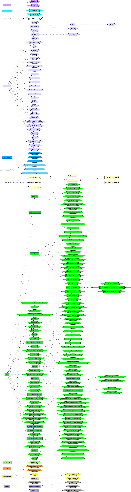
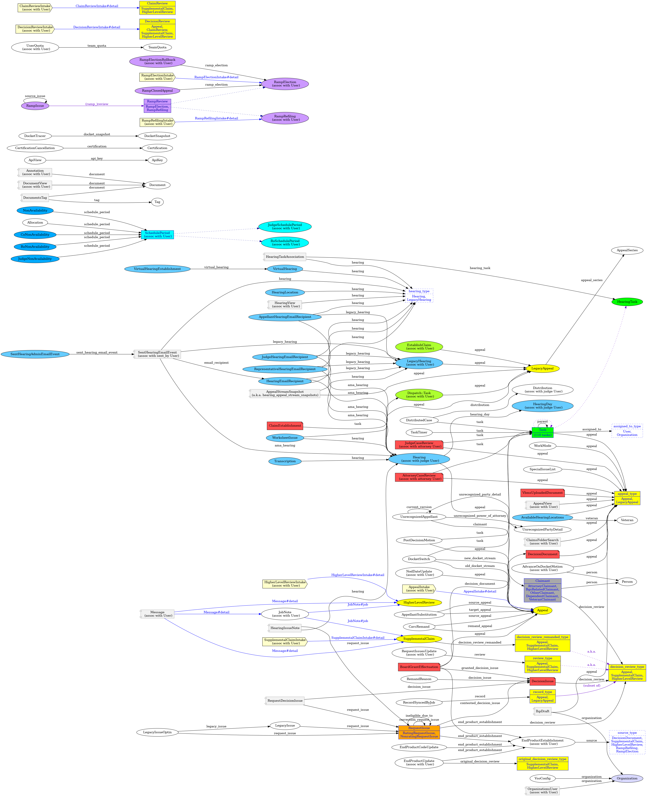
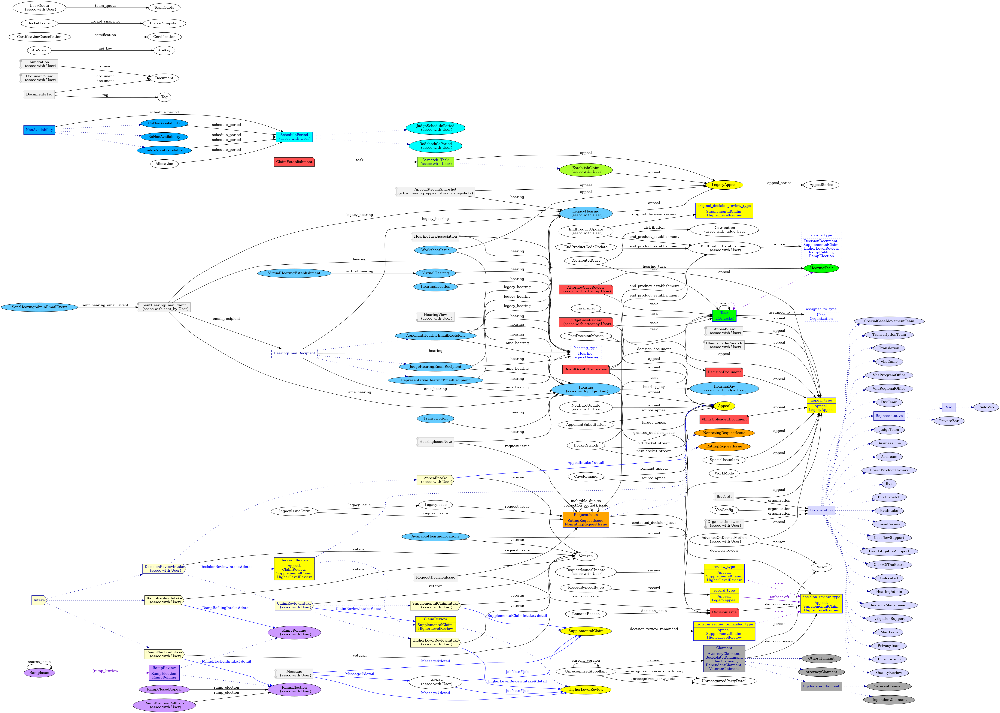

Schema Diagrams #
The following subclass and ERD diagrams reflect entities in the Caseflow DB. You can also get the svg version by clicking on the diagrams below. The svg version of these diagrams facilitates text search (by opening the file in a web browser). These diagrams are automatically generated.
To Caseflow Engineers: These files are generated by running make docs and are saved in your local docs/schema directory (see
PR #16371). In that directory, the svg version of these diagrams facilitates text search, and the dot version allows you to manipulate the diagrams (for example using online Graphviz tools).
Caseflow Subclasses #
To help understand Caseflow’s schema, let’s start with DB tables that store records (a.k.a. DB rows) representing different ActiveRecord classes. The following diagram shows ActiveRecord classes (and subclasses) associated with certain DB tables.
- Classes associated with the same DB table are indicated with the same color – this color-coding is used in subsequent diagrams.
- These DB tables typically have a
typecolumn that indicates which ActiveRecord class is being represented by the record. - Blue-outlined rectangular nodes typically indicate abstract classes; while ellipses indicate concrete classes. The names of concrete classes are used to populate the
typecolumn. - Blue dotted edges/arrows indicate a subclass relationship.
Notable observations:
- The
Appealclass is a subclass ofDecisionReview.HigherLevelReviewandSupplementalClaimare subclasses ofClaimReview, which is a subclass ofDecisionReview. This class hierarchy is mimicked byDecisionReviewIntake,ClaimReviewIntake,HigherLevelReviewIntakeandSupplementalClaimIntake. However, all*Intakerecords are stored in theintakestable, whereasAppeal,HigherLevelReview, andSupplementalClaimrecords are stored in separateappeals,higher_level_reviews, andsupplemental_claimstables respectively. - There are many Tasks and some are grouped under an abstract class. For example, the
ColocatedTaskabstract class groups many*ColocatedTasks. Similarly, there are abstract classesJudgeTask,AttorneyTask,MailTask, andHearingAdminActionTask. Vso,FieldVso, andPrivateBarare types ofRepresentatives, which is a subclass ofOrganization.
 ( dot source)
{kind=link}
Caseflow ERD #
This next diagram is an Entity-Relationship Diagram (ERD), showing how ActiveRecord classes are associated with each other via some *_id column (e.g., foreign keys). The column name can be inferred from the edge label between two nodes. For example, a Hearing record is associated with a HearingDay via the hearings.hearing_day_id column – in the DB, there is a foreign key constraint from the hearings table to the hearing_days table.
- To reduce clutter, some abstract classes are consolidated into blue-outlined rectangular nodes containing a title. For example, the node with title
appeal_typerefers to theAppealandLegacyAppealclasses. In Rails, this is a polymorphic association – hence a foreign key constraint cannot be added to the DB. - Many classes are associated with the
Userclass. To reduce clutter, aUserclass is not drawn in the diagram. Instead, this is indicated with the text “(assoc with User)” for relevant classes to avoid drawing too many overlapping edges. - Additional color-coding has been applied to categorize certain nodes:
- light blue: classes containing the string “Hearings” and classes related to hearings
- red: classes related to completion of a significant step (e.g.,
ClaimEstablishment,JudgeCaseReview,DecisionDocument,DecisionIssue,BoardGrantEffectuation)
- Light gray rectangular nodes with 2 rectangular notches indicate join tables (e.g.,
OrganizationsUser,RequestDecisionIssue), which associate records in 2 other tables. - Purple edges/arrows indicate custom relationships manually added to the diagram.
- Solid blue edges/arrows indicate polymorphic relationships between tables.
Notable observations:
DecisionReviewIntake(intakestable) has a polymorphic association toDecisionReview(abstract class) via thedetail_idcolumn. However, each type of intake class maps to a specific table.AppealIntakeclass maps to theappealstable (a.k.a.Appealclass).HigherLevelReviewIntakeclass maps to thehigher_level_reviewstable (a.k.a.HigherLevelReviewclass).SupplementalClaimIntakeclass maps to thesupplemental_claimstable (a.k.a.SupplementalClaimclass).RampElectionIntakeclass maps to theramp_electionstable (a.k.a.RampElectionclass).RampRefilingIntakeclass maps to theramp_refilingstable (a.k.a.RampRefilingclass).
AppealStreamSnapshot(hearing_appeal_stream_snapshotstable) maps aLegacyHearingwith aLegacyAppeal. This association is also available in thelegacy_hearingstable viaappeal_id. PerhapsAppealStreamSnapshotshould be deprecated.AppealStreamSnapshot,AppealSeries,LegacyHearing,ClaimEstablishment,Dispatch::Task,EstablishClaim, andWorksheetIssueonly exists to supportLegacyAppeals.CavcRemand,AppellantSubstitution, andDocketSwitchreference two differentAppeals.Taskcan beassigned_toaUserorOrganization, as indicated by theassigned_to_typecolumn.- The nodes labeled
decision_review_type,review_type, anddecision_review_remanded_typeare synonyms. The naming difference is an artifact of different column names for the associations.
 ( dot source)
{kind=link}
Caseflow ERD with Subclasses #
This next diagram combines the above two diagrams.
 ( dot source)
{kind=link}